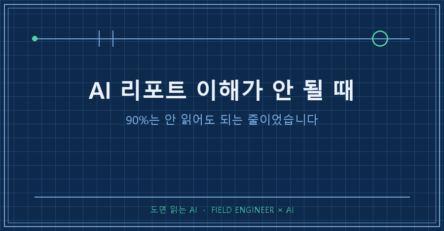
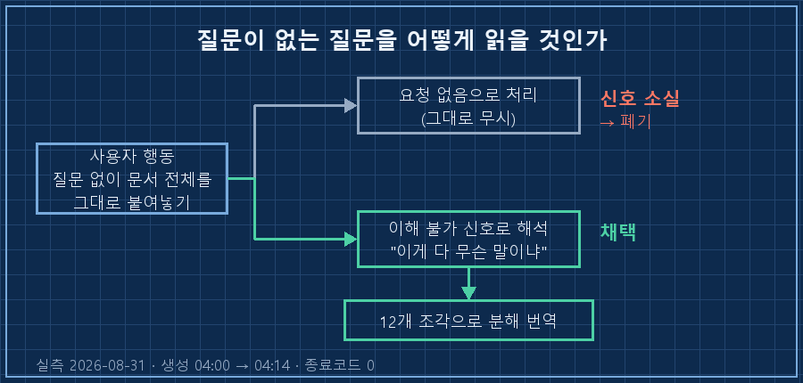
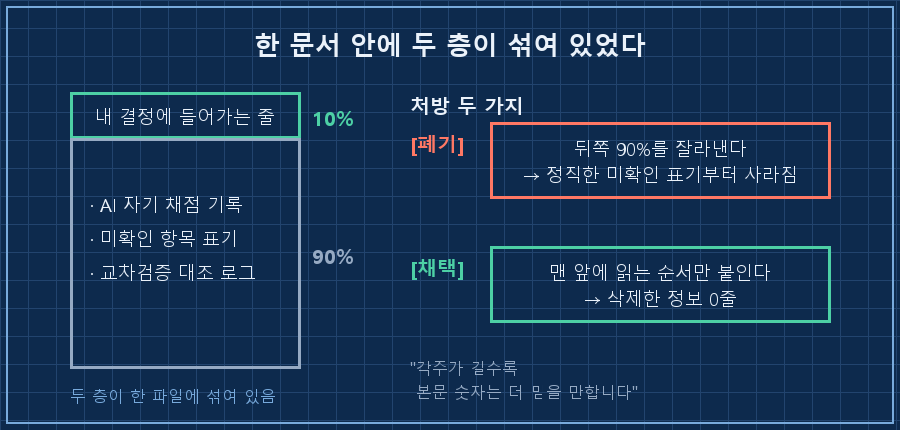
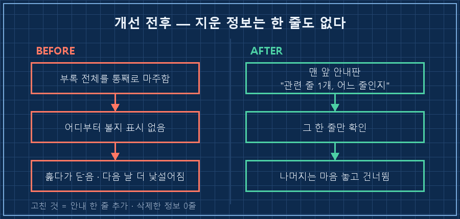

어젯밤에 저는 제 AI한테 질문을 한 줄도 안 썼습니다.
대신 그날 리포트의 마지막 장을 통째로 복사해서 그대로 되던져놨어요.
새벽에 돌아온 답이 열두 조각이었습니다.
한 문장으로 줄이면 이래요.
AI 리포트 이해가 안 될 때 진짜 문제는 정보량이 아니라 읽는 순서가 안 적혀 있는 겁니다. 분량을 줄이면 근거가 같이 날아가고, 그대로 두면 안 읽혀요. 그래서 저는 세 번째 길로 갔습니다. 정보는 한 줄도 안 줄이고 읽는 순서만 맨 앞에 붙였어요.
십오 년째 현장 설비를 다루는 일을 하고 있어요. 그런데 이 일의 절반은 사실 남이 만들어둔 문서를 읽는 시간입니다. 도면, 매뉴얼, 앞사람이 남긴 인수인계 노트.. 읽어도 모르겠는 문서라면 이력이 좀 있다고 생각했거든요.
그런데 정작 제 AI가 매일 만들어주는 문서 앞에서 제가 똑같은 얼굴을 하고 있더라고요.
2026년 8월 기준이고요. 매일 정해진 시각에 AI가 리포트를 한 편씩 만들어 폴더에 떨궈두는 구조면 주제를 안 가리고 그대로 해당됩니다. 제 경우엔 개인 공부용으로 굴리는 리포트였어요.
1. 질문을 안 썼는데 그게 질문이었어요
이 자동화에는 제가 답변을 요청하는 칸이 하나 있습니다. 궁금한 걸 적어두면 다음 회차에 답이 붙어 나오는 방식이에요.
그날 저는 거기에 문장을 하나도 안 넣었습니다. 전날 리포트의 마지막 장을 긁어다 그대로 붙여넣기만 했어요.
다음 날 새벽 로그가 이렇게 남았습니다.
[2026-08-31 04:00:02] 리포트 생성 시작
[2026-08-31 04:14:56] 종료코드: 0십오 분 만에 끝났고 결과는 정상이었고요. 안에는 이런 줄이 적혀 있었습니다.
문장으로 된 질문 없이 전날 부록+각주 전문이 통째로 도착했습니다.
"이게 다 무슨 말이냐"로 해석하고 12개 조각으로 번역했습니다.
선제 교정한 오해 2건저는 "이게 무슨 말이냐"라고 타이핑한 적이 없어요. 그런데 통째로 되던지는 행동 자체가 그 뜻이었던 겁니다.
읽다가 좀 서늘했습니다. 사람이 문서를 못 읽겠을 때 하는 짓이 원래 이거잖아요. 질문을 정리해서 묻는 게 아니라 그냥 통째로 들이밀기.. 제가 후배한테 그런 걸 몇 번 받아봤으면서 제가 하고 있었어요.

2. 열두 조각으로 쪼개니 진짜 두 줄이 보였어요
돌아온 답은 조각마다 번호가 붙어 있었습니다. Q1부터 Q10까지, 그리고 앞뒤로 지도 격 문단이 두 개 더요.
첫 조각에 이렇게 적혀 있었습니다.
그 페이지에서 [내] 돈에 실제로 영향을 주는 문장은 단 두 줄입니다.
나머지 90%는 제가 제 일을 제대로 했는지 스스로 채점한 기록이고,
안 읽어도 아무 손해가 없습니다.이 한 문단이 그날의 수확이었어요.
저는 그 페이지를 전부 이해해야 하는 페이지로 알고 있었습니다. 그래서 매일 훑다가 막히고, 막히니까 안 읽고, 안 읽으니까 다음 날 더 낯설어지고요. 반복 반복 반복..
정작 제 결정에 들어가는 줄은 두 줄뿐이었습니다.
| 구간 | 실제 성격 | 안 읽어도 되나 |
|---|---|---|
| 앞쪽 본문 | 오늘의 판단과 근거 | 아니오 |
| 뒤쪽 부록·각주 | AI가 자기 작업을 채점한 기록 | 대부분 예 |
| 그 안에 섞인 두 줄 | 내 결정에 직접 들어가는 값 | 아니오 |
문제는 셋째 줄이에요. 안 읽어도 되는 90% 사이에 꼭 읽어야 하는 두 줄이 섞여 있었습니다. 그러니까 전부 읽거나 전부 안 읽거나 둘 중 하나가 되더라고요.
AI 리포트 이해가 안 될 때 제가 늘 "내가 배경지식이 부족한가" 쪽으로 갔던 게 여기서 깨졌습니다. 배경지식 문제가 아니라 진입점이 없던 거였어요.
3. "내부용"이라고 생각한 페이지는 없었습니다
같은 답변 안에 AI가 자기 쪽 원인을 적어놨는데, 저는 이 줄에서 제일 뜨끔했어요.
제가 "내부용"이라 생각하고 약어·별표로 압축한 페이지가
실제로는 매일 눈에 들어오는 페이지였다는 뜻입니다.한 파일 안에 들어 있으면 내부용은 없습니다. 열면 보이니까요.
저도 똑같은 걸 합니다. 보고서 뒤에 검토 흔적이나 계산 근거를 붙여놓고 "이건 내가 보려고 넣은 거야"라고 생각하죠. 근데 받는 사람은 그 구분을 모릅니다. 그냥 한 문서예요.
그러면 뒤쪽을 잘라내면 되지 않느냐. 그게 두 번째 함정이었습니다.
그 부록이 길었던 이유는 확인 못 한 항목을 확인 못 했다고 적어뒀기 때문이거든요. AI가 이렇게 답하더라고요.
각주에 "확인불가"가 10줄씩 붙어 있는 건 리포트가 부실하다는 뜻이 아닙니다.
정반대입니다. 각주가 길수록 본문 숫자는 더 믿을 만합니다.여기서 저는 손을 멈췄습니다. 안 읽히니까 지우자고 하면, 정직한 흔적부터 먼저 사라져요. 짧고 깔끔한 리포트가 되는 순간 그건 확인 안 한 숫자를 확인한 척 적는 리포트가 됩니다.

4. 지우지 않고 순서만 붙였습니다
그래서 나온 처방은 삭제도 요약도 아니었어요. 그날 개선 항목에 이렇게 적혔습니다.
오늘부터 부록 맨 앞에
"이 부록에서 [내] 돈과 관련된 줄은 N개, 어느 줄인지" 안내를 답니다.
정보를 줄이지 않고 읽는 순서만 표시합니다. (오늘은 1개)문 앞에 안내판 하나 세운 겁니다. 방 안 물건은 하나도 안 뺐고요.
그날치 안내는 "1개"였어요. 열 조각짜리 부록에서 제가 실제로 봐야 할 건 한 줄이었다는 뜻입니다. 그 한 줄만 보고 닫아도 손해가 없다는 걸 문서 스스로 말해주니까, 그제야 저는 나머지를 마음 놓고 건너뛸 수 있게 됐습니다.
역설적인데요. 안 읽어도 된다고 적어주니까 오히려 읽게 되더라고요! 부담이 사라지니까 눈이 붙습니다.
여러분도 AI한테 받은 문서를 열었다가 그냥 닫아본 적 있으시죠? 그때 그 문서에 "여기서 당신한테 필요한 건 이 줄"이라고 적혀 있었으면 어땠을까 싶어요.
이런 게 궁금하실 것 같아서
Q. 그냥 짧게 요약해달라고 하면 되는 거 아닌가요?
저도 그 버튼을 누를 뻔했어요. 근데 요약을 시키면 제일 먼저 잘려나가는 게 "이건 확인 못 했다"는 줄입니다. 그럴듯한 문장만 남고 미확인 표시가 없어지면, 나중에 그 숫자를 그냥 사실로 쓰게 돼요. 저는 그게 더 비싼 실수라고 봤습니다.
Q. 어느 줄이 중요한지 AI가 잘못 고르면요?
AI 리포트 이해가 안 될 때 제일 위험한 처방이 이겁니다. 그래서 안내가 "N개, 어느 줄"까지만 적게 했습니다. 내용을 대신 판단해주는 게 아니라 위치만 알려주는 거예요. 잘못 골랐어도 원문이 그대로 아래 붙어 있으니까 제가 확인하면 됩니다. 지워버리는 처방이었으면 확인할 원문도 없었겠죠.

AI가 만든 리포트가 안 읽힌다고 느껴지면, 저는 이제 분량부터 의심하지 않습니다. 그 문서 안에 "당신이 볼 건 여기"라고 적힌 줄이 있는지를 먼저 봐요.
질문을 못 만들겠어서 문서를 통째로 되던지는 날이 있잖아요. 저는 그게 게으름인 줄 알았는데, 그냥 안내판이 없는 방에 들어갔던 거였습니다.
AI한테 일 시키다 배운 것들은 makefield.ai에도 같이 올려두고 있어요.
태그: #AI리포트 #AI리포트이해가안될때 #AI보고서읽는법 #AI가만든문서 #AI리포트요약 #AI자동리포트 #AI에게일시키기 #AI결과물검수 #AI문서관리 #AI활용법 #AI실무활용 #무인자동화 #AI에이전트 #개인AI에이전트 #도면읽는AI